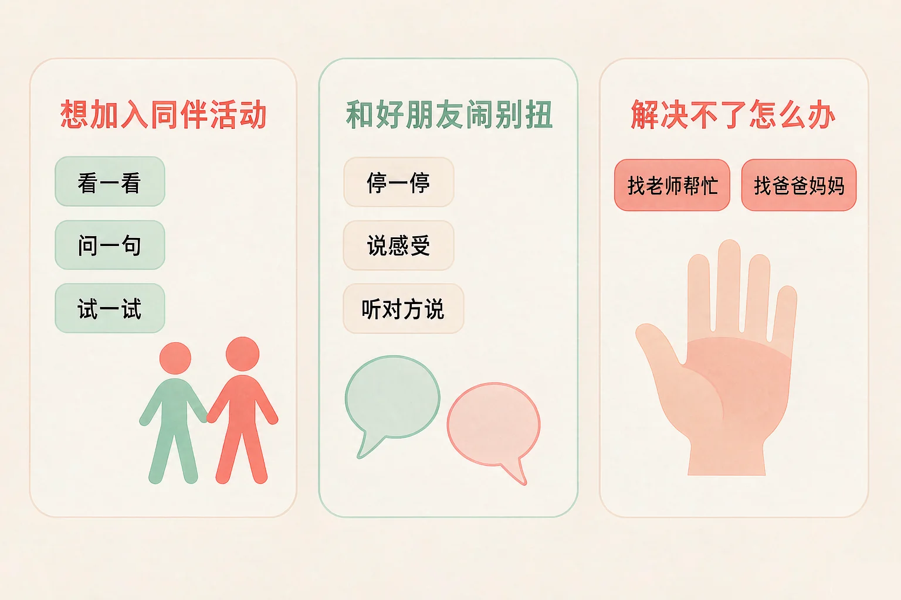
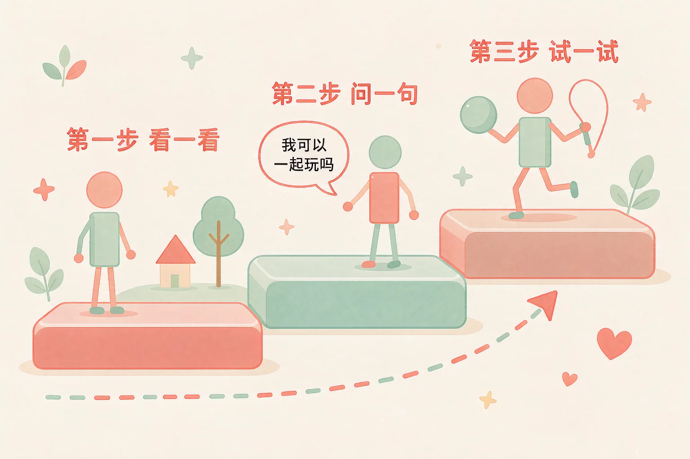
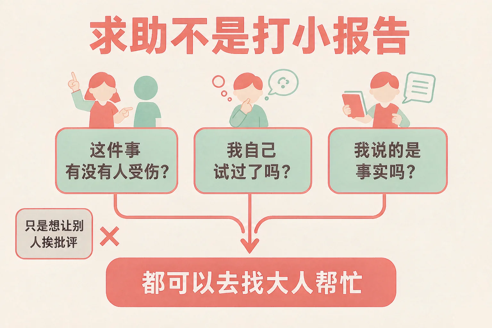

Gallery
v1.0.0 · skill v7.22.0
小学四年级 · 人际交往
想加入别人的游戏，却被一句「人够了」挡回来，这时候可以怎么办？

选一个你真正想知道的问题，后面的活动都会围着它转。
选择或输入后，这节课会围绕你的问题展开。
先凭直觉选一个，选完立刻看到解释——错了也没关系，正好知道要重点听哪里。
1. 我走过去说想加入踢球，他们回答人够了。下面哪个想法更合适？
被拒绝的原因常常很简单：人够了、这个游戏只能两个人玩、这会儿不方便。错因提醒：常见错误是把「这件事没成」误认为「我这个人不行」——把一件事的答案，当成了对自己的评价。
2. 和好朋友闹别扭，两天没说话了。下面哪个做法更合适？
先说一句自己的感受，比等谁先低头更容易把话说开；两个人的事，放在两个人之间解决。错因提醒：有人误认为先开口就是认输——其实先开口的人，是把这段友谊看得更重要的人。
3. 下面哪一件事属于正当求助，不属于打小报告？
有人受伤、自己试过还是不行，就去找能帮忙的大人——这是正当求助。错因提醒：最容易搞混的是把「想让别人挨批评」也当成求助；判断的时候问一句：这件事有没有人受伤？我说的是事实吗？
为什么要学这一课？
三年级的时候，我们已经知道自己在班里有哪些角色，也知道见人要问好（And）；可是轮到自己想加入别人的游戏，脚就像被粘在地上，或者一开口就被一句「人够了」挡回来，心里一下子凉了（But）；所以这节课先学最要紧的一件事——怎么走进同伴的活动里（Therefore）。
想加入一群正在玩的同学，不需要硬闯进去，也不必一直站在旁边。可以用三步小准备。

有的同学误认为「被拒绝就是他们不喜欢我」。其实被拒绝的原因常常和「你这个人怎么样」没关系——人够了、游戏只能两个人玩、这会儿不方便，都是很常见的原因。要紧的不是这一次成没成，而是你有没有给自己留一句可以再问的话。
🔍 深层理解 换个角度再看一遍这件事，看看能不能说出背后的原理。
看见它：「被拒绝」这三个字看着很大，其实常常只是一句很具体的话：人够了。把这句话听成一件小事，心里就松一点。
解释它：为什么要先看一看？因为直接冲进去，别人正在玩到一半，多半会先拒绝；先看清场面，你就能挑到一个真的能进去的位置。
迁移它：这三步到哪里都好用：新的兴趣班、小区里的球场、转学后的第一天——先看一看，再问一句，然后试一试。
先点一个课间情境，再从三个做法里选一个。选得不太合适也不会说你错，只会告诉你：对方可能会有什么反应，事情接下来会变成什么样，还可以试试什么。
先点一个你今天可能遇到的情境。
和好朋友闹别扭，最难受的不是那天，而是接下来两天谁都不说话。想和好，可以走四步。

正当求助是
为了让大家安全、把问题解决掉，去找能帮忙的大人：说事情经过，说说自己试过什么，也说出你需要什么帮助。
打小报告是
为了让别人挨批评，把别人的小事专门讲一遍，甚至添上自己的猜测。管的是别人，不是问题。
有的同学误认为「找老师就是打小报告，会被同学说闲话」，于是一个人硬扛。这里最容易搞混的是两者想要的结果：一个想把事解决掉，一个想让人挨批评。只要你是为了让谁更安全、把事情说清楚，那就是正当求助。
🔍 深层理解 换个角度再看一遍这件事，看看能不能说出背后的原理。
拆开它：「闹别扭」拆开看是两件事：一件是我心里不舒服（感觉），一件是接下来我做什么（做法）。感觉不用道歉，做法可以挑。
比较它：「你怎么能这样说」和「你那样说的时候我有点难过」——说的是同一件事，听的人反应常常很不一样。第二句只讲自己，不审判别人。
迁移它：这四步在家里和兄弟姐妹闹别扭时也管用；求助的三问，在小区里、在兴趣班也能用。
先在左边点一张小事卡，再点下面三个框中的一个，把它放进去。放错了也不扣分，我会告诉你它更合适放在哪儿，以及为什么。
先在左边点一张小事卡。
情境：课间跳绳，小禾很想加入，走过去说「我想玩」，同学回答「人够了」。他的脸一下子热了。请你陪他走三步。
如果还是不行呢？
还可以问一句「那你们什么时候人少一点」；或者去找另一个也在等人的同学，一起玩别的。一次没成，只说明这一种方式这次不合适。
有的同学误认为「被拒绝了还要再问，很没面子」。小禾这三次开口，一次也没有低三下四——他一直在做同一件事：找到自己能出力的地方。真正让人看得起的，不是从不被拒绝，而是被拒绝以后还能好好说话。
说给同桌听：小禾这三步里，哪一步你自己已经做到了？哪一步还想再练一练？
先凭直觉选一个，选完立刻看到解释——错了也没关系，正好知道要重点听哪里。
1. 下面哪句话说得对？
看一看、问一句、试一试，是自己能掌控的三步；它把「能不能进去」变成了一件可以练习的事。错因提醒：常见错误是把一次被拒绝误认为对自己的评价；也有的同学误认为主动开口很丢脸——其实主动的人，只是更想要这段相处而已。
2. 和好朋友闹别扭了，下面哪个说法更合适？
说自己感受的时候，只讲自己的感觉，对方更容易听得进去，也更容易接话。错因提醒：容易搞混的是「说感受」和「给对方下结论」——「你太过分了」是在审判人，「我有点难过」是在说自己的心情。
3. 下面哪件事是正当求助，不是打小报告？
有人可能受伤害、你自己也解决不了的时候，找大人帮忙是最合适的办法。错因提醒：最常搞混的是目的——为了让谁更安全、把事情说清楚，是求助；为了让谁挨批评，就变成了打小报告。
三栏里各选一条，拼成一句话。这句话就是你的交友小名片，下次真的遇上，照着它走一步就行。
① 我遇到的情况 已选：还没有选
② 我先做的一件事 已选：还没有选
③ 如果还不行，我可以请谁帮忙 已选：还没有选
三栏各选一条，名片就写好了。
把它变成你自己的话：
想一想，这一周你最可能遇上哪一件事？把上面选好的三条，写成你自己的句子。
先凭直觉选一个，选完立刻看到解释——错了也没关系，正好知道要重点听哪里。
1. 小组做展板，我和同桌都想照自己的办法排，谁也不肯让。下面哪个做法更合适？
争的是办法，不是谁高谁低。一个小试验，常常比争十分钟都快。错因提醒：有人误认为「让一步就是输」，于是干脆撒手不管——结果作品没做成，自己的想法也没人听见。
2. 新同学转来第三天，一直一个人坐着。下面哪个做法更合适？
你先开口的这一句，可能就是他这一周最想听到的一句话。错因提醒：常见错误是误认为「他那么安静，应该是不想被打扰」——安静和孤单，看起来很像，问一句才知道。
3. 有同学跟你说：你以后别跟小宇玩，跟我们玩就行。下面哪个做法更合适？
把话说清楚，别人就知道你的界线在哪里；偷偷来偷偷去，最后两边都不好受。错因提醒：不要误认为「必须选一边才安全」——真实的情况常常是，你可以同时和不同的人做朋友。
还要记牢一件事：和同伴相处，有开心也一定有闹别扭的时候，两样都很正常。如果有些事你自己试过还是解决不了，心里也一直放不下，说给老师或者爸爸妈妈听，是很聪明的做法。
给别人讲一遍：请用「看一看、问一句、试一试」这三个词，说清楚你上一次想加入同伴活动的经过。
再动一动手：画一画你的三步小台阶，在每一级台阶上写一个你自己做得到的小动作。
三层练习，做完第一、二层就算通关；第三层留给愿意继续探索的同学。
⭐ 基础巩固（必做）
⭐⭐ 能力应用（必做）
⭐⭐⭐ 迁移挑战（选做）
左边是学它之前要先会的，右边是学会之后可以继续探索的，下面是同一领域的伙伴知识。
图谱正在加载：首次进入需下载知识索引（约 1–3 秒），加载完成后本行会自动消失。